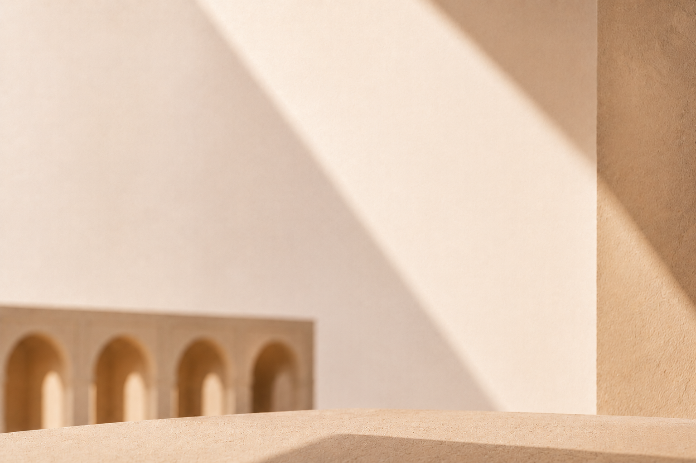
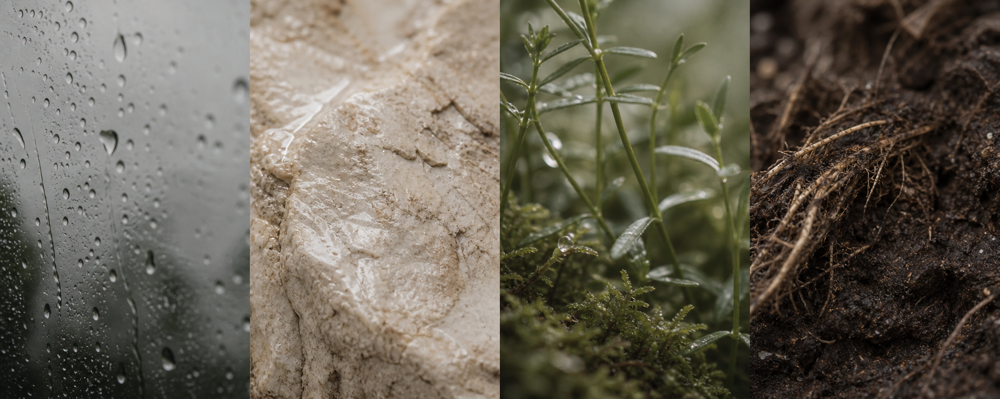
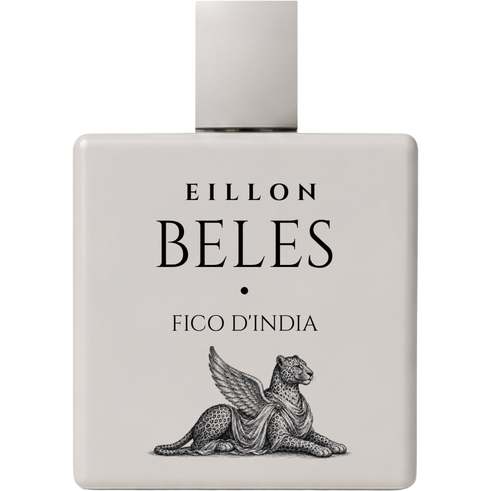

Rainwater · Bergamot · Green Stem
A lucid opening — cool air, rain on leaves, and a quick glint of citrus. Clean, bright, and newly fallen.

Named for Asmara, Eritrea's capital city, this fragrance was composed around the first minutes after rainfall — when warm pavement exhales, when wet stone darkens, and when the air turns mineral and green.
Built around a clear petrichor accord, Asmara holds damp earth, rainwater, and softened moss in an architectural calm. It is intimate. Considered. Unhurried — a quiet luxury shaped by place, weather, and memory.
Read the composition →Three movements, drawn carefully into one another — designed to settle on the skin as rain settles into stone.
A lucid opening — cool air, rain on leaves, and a quick glint of citrus. Clean, bright, and newly fallen.
The petrichor accord — mineral, damp, and quietly green. Soft earthiness held with polished restraint.
A grounded close — root, soil, and clean skin after rain. The fragrance settles into a calm, earthen trace.
Petrichor, built as a quiet balance of rain, mineral texture, green shade, and earth.

A hand-finished cap of soft ivory resin, weighted to settle precisely.
A slim ring of polished champagne metal — the only ornament the bottle requires.
An elliptical flacon sculpted in clear glass — formed to hold light like a shallow pool.
Set in minimal type: EILLON — Asmara — Eau de Parfum.
Rain on stone. Windows open.
Asmara is interpreted as atmosphere: darkened pavement after a summer shower, moss at the edge of stone, air moving through an open room, cool and mineral.
Apply once to wrist or collarbone, then let the mineral accord rise without rubbing.
Mist lightly over a scarf or lining to carry the rain-washed trail through the day.
Refresh with one spray before evening; the earth notes deepen rather than becoming louder.
“Asmara doesn't enter a room — it composes one. It is the most quietly confident fragrance I have worn in a decade.”
— Vogue Scandinavia, 2026

€ 240
A mineral, rain-washed composition, hand-finished in Copenhagen and presented in a sculpted oval flacon. Each bottle arrives in a stone-tone cloth case with cream archival packaging.
Daily wear, gifting, and the fullest expression of the petrichor accord.
Cool projection for the first two hours, then a close, rain-washed mineral trail.
Cool droplets, green stem, and a bright citrus edge.
The petrichor accord turns mineral, violet-green, and quietly damp.
Vetiver root, softened soil, and clean musk stay close to skin.
Alcohol denat., parfum, aqua, benzyl salicylate, limonene, linalool, coumarin, citral.
Complimentary worldwide shipping. Unopened orders may be returned within 30 days. Engraved bottles are made to order and are final sale.